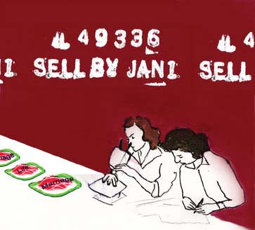

Before you even orient yourself, there is someone already three steps ahead. Marketers and sociologists are designing your life, as we speak, on one neat, adult line. They are portending your careers, your marriages and divorces. There will probably be more than one. And you still think you can choose your own adventure … Society is ready to prepackage your life in Saran wrap, as your relationships thrust towards hermetically sealed institutions. Tradition is being rivaled by escalating rates of divorce, cohabitation and the inclusion of homosexual marriages. You think it is a personal and private decision? It has deep roots in the function of society and politics . It is part of your conditioning. Read on for a little encounter with Sam as you make life decisions together. Follow one path of the story and make the choices as you explore the ups and downs of your relationship. You're the star of the story! (As the data found tended to be based on heterosexual relationships, this story can be read as that. But you wouldn't really know it until the end, where the difference of anatomy is a reality none of us can escape. Of course, if you were a character in Ursula Le Guin's The Left Hand of Darkness, this would not be a point of contention. That would be another choose-your-own-adventure.)
|
 You were finally left to your own demise as you were dropped off at your dorm room for your freshman year of college. As the temperature soared indoors, your nerves flickered to a breaking point. Independence was now dangling on a string, and you were smart enough to snatch it. The move out of your parents' home was difficult, more for them than you. Your life was finally beginning. But the day was wearing on you, and you decided to take a break and walk to the student union to buy an iced coffee. The one lone person occupying the student union was Sam. He was an artist, and his chosen medium involved calling anonymous people in foreign countries while he would draw. The final drawing would be built up of abstract marks that would recall the context of the phone conversation. He placed these calls bi-weekly, viewing it as a few cents of sacrifice for an anonymous voice and a titillating inflection. You found the café and bought your drink. You were attempting to leave but the man at the phone booth caught your attention. He was muttering something. Was it Icelandic? “Reykjavik, Reykjavik,” whispered Sam. It was too absurd, and so you snorted and guffawed, and it echoed down the hall. You could never contain your laughter. Sam, now disrupted from his precious process of drawing, looked you over. He realized he was caught in a compromising act. He started laughing with you. Impromptu rendezvous involving phone booths and Iceland only happen once in a lifetime, and so you started seeing each other. You swooned as he whispered various phrases in foreign languages to you on the phone. He was captivated by the shrill tone of your laugh. It seemed perfect, for now. And four years later the real world crept up to move you through to the next phase of your life. Something ill-defined and vague is about to happen, but you have the choice: |